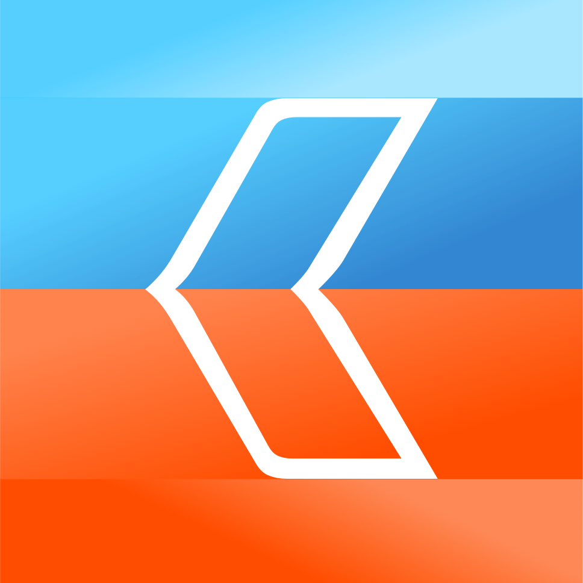
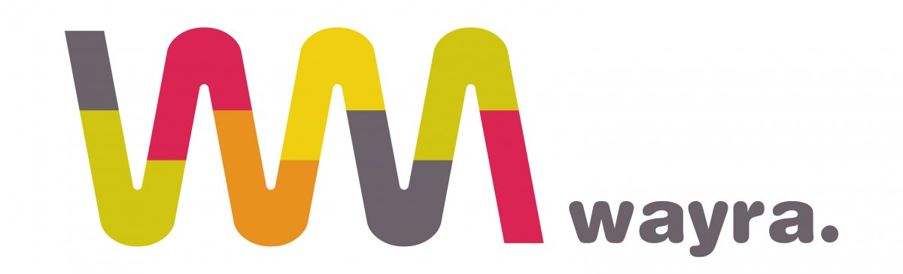

Servus Bayern! Rails Girls is returning to Munich, early 2017! During this free workshop we'll explore the magical world of Ruby on Rails, and build a working web application using this powerful framework.
Follow us on Facebook and Twitter for information on upcoming events and meetups
You will learn designing, prototyping and coding with the help from our coaches.
You need your own laptop, curiosity and a sprinkle of imagination!
Want to help? We are looking for volunteers and Rails coaches. Email the Rails Girls Munich team.
| 19.00 - 21:00 |
Installation partyGet Ruby and Rails installed with the help of our workshop coaches. Bring your laptop if you can, so we can install Ruby on Rails for you.Where: Wayra Deutschland GmbH |
|---|
| 9:00 - 10:00 |
Registration, coffee and ButterbreznAnyone who didn't have a chance to install Ruby on Rails can do so. Everyone else can grab a coffee, Butterbrezn and register in order to get set up for the workshop! |
|---|---|
| 10:00 - 10:30 |
WelcomeOutline of the day |
| 10:30 - 11:30 |
Lightning TalksLearn some 'tech talk', and a bit about what a web app is made of, before you start building your own |
| 11:30 - 13:45 |
Hands-on, Minds-on workshopWe will work on creating the Rails Girls 'ideas' app |
| 13:45 - 14:30 |
Lunch! |
| 14:30 - 15:30 |
Workshop Part 2Finish your app, get it online, or extend it! |
| 15:30 - 16:00 |
Coffe break & Lightning Talks |
| 16:00 - 17:30 |
Workshop Part 3 |
| 17:30 - 18:30 |
AfterpartyStick around, mingle, and reward all of your hard work with some refreshments, as well as connecting with your coaches and fellow attendees! |
Applications close: January 16th
Acceptances informed: January 20th
(please check also your Spam folder for the reply)
Location: Wayra Deutschland GmbH, Kaufingerstraße 15, 80331 München Maps
 interfacewerk GmbH interfacewerk is a Software Design and UX Consulting company, designing software to empower users. We build innovative products to create new opportunities for you.
 Wayra Wayra is Telefónica's digital startup accelerator. Based in Munich with accelerators in 11 countries where Telefónica operates a telecom business or a strong focus on digital entrepreneurship. Proud location sponsor!
Simplabs build solutions for the web and mobile devices, in Ruby on Rails, Ember.js, and Swift. Proud sponsor of our Saturday lunch!
How much does the workshop cost? Nothing, it's free! You just need to be excited!
Who is this workshop for? Women of any age with basic knowledge of working with a computer. We’ve had people of all ages taking part. Talks will be conducted in English, but you are free to work in German amongst your group. Please bring your laptop.
Can men attend? Yes, but they need to be accompanied by a female attendee.
I know how to program - How can I help? We’re also looking for people to be coaches! We’ll give you all the information you need. Email us
Is there a Code of Conduct? Yes! In short, Rails Girls Munich is dedicated to a harassment-free workshop experience for everyone. Our full anti-harassment policy can be found at: www.railsgirls.com/munich_coc
 Larisa Schappach
Larisa Schappach